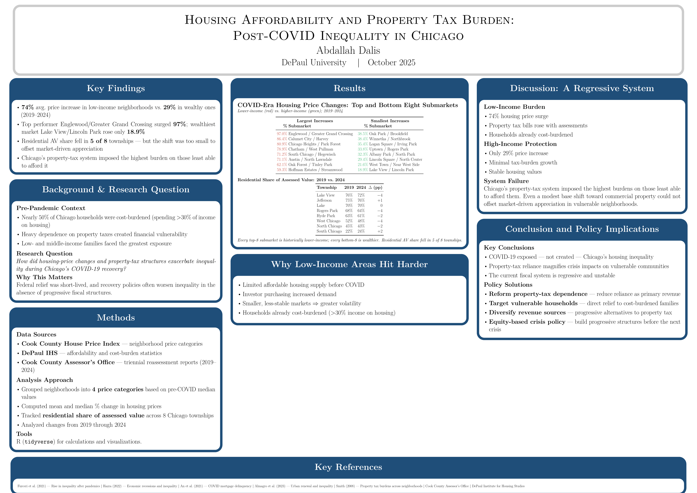

Flagship project · Interactive
Creating a Healthier, More Connected Future for the Far South Side
CTA Red Line Extension and the Community of Roseland
An economic analysis prepared by the MSEQA Program, DePaul University · ECO 575 Data Practicum
Prepared for the Chicago Transit Authority & Roseland community leadership
The short version: many Chicago neighborhoods — especially on the South and West sides — don't have a nearby affordable grocery store. This map predicts which of the city's 791 neighborhoods are most at risk. Click any neighborhood to see why, or use the toggle to compare the prediction with the official designation.
Outcome: USDA LILA-at-½-mile flag. Covariates: % Black, % Hispanic, log median family income, % SNAP, % no-vehicle households. Predicted probabilities use the published full specification (cluster-robust by community area). Built in Python & Stata; mapped with Leaflet. Team practicum (ECO 575, DePaul); my contribution: the logit specification, marginal-effects analysis, and this visualization.
Data & methods
How it was built
The food-access model is one layer of a 10-week applied practicum that triangulated grocery access against crime, transit, SNAP retail, and grocery-siting economics for Chicago's Roseland community — work tied to the CTA Red Line Extension. The map shown above is the econometric core; the surrounding analysis grounded it in neighborhood reality.
Primary data
- USDA Food Access Research Atlas (2019) — tract-level low-income / low-access measures
- American Community Survey — demographics & income
- Chicago crime data — offense counts by community area
- USDA SNAP Retailer Locator — authorized food-retail access
- CTA ridership reports — transit access
- CMAP Roseland data snapshots — neighborhood context
Method
- Logistic regression of USDA LILA-at-½-mile status on % Black, % Hispanic, log median family income, % SNAP, % no-vehicle
- Three specifications (parsimonious → full → cluster-robust SE by community area)
- Average marginal effects for interpretation; VIF / correlation checks for multicollinearity
- Census-tract ↔ community-area crosswalk to map results to Chicago neighborhoods
- Built in Stata & Python; visualized with Leaflet
Key readings
- Brookings — premium-grocery absence & disinvestment in Black neighborhoods
- UChicago Data Science Institute — market concentration & food-access trends
- Finding Food in Chicago & the Suburbs — Northeastern Illinois Community Food Security Assessment (2008)
Data sources reflect the full team practicum; the model, marginal-effects analysis, and this visualization are my contribution. Read the written brief (PDF) →
🏆 Award-winning research
Housing & Tax Inequality in Chicago's COVID-19 Recovery
2nd place, Graduate Cohort · COVID Information Commons 2025 — an international student paper challenge (NSF-funded)
Sole-authored · presented at the Federal Reserve Bank of Chicago
How housing-price dynamics and Chicago's dependence on property taxes interacted to deepen inequality through the COVID-19 recovery — and where the leverage points are for a more equitable fiscal structure before the next crisis. Read the paper (PDF) →

From the anonymous judging panel
"The author clearly explained how COVID-19 affected housing and taxes for vulnerable groups, creating disparities, and offered strong recommendations connected to policy and community needs. The use of data made the findings credible."
"A strong and well-supported analysis of how housing affordability and property tax dependence deepened inequality during Chicago's COVID-19 recovery."
"A very interesting and relevant topic. The insights and findings are well supported by charts, which strengthen the paper."
Selected work
Other research & analysis
Monetary Policy & Local Labor Markets
When the Fed raises interest rates, which local job markets actually feel it? I study this two ways — comparing rate-sensitive counties (a shift-share difference-in-differences, 2002–2019) and tracking the economy over time (VAR / SVAR / Jordà local projections + random forest with high-frequency FOMC surprises). The takeaway: the odd finding that tightening seems to raise employment is a statistical artifact — done carefully, the expected contractionary effect reappears.
Empirical Industrial Organization
How do firms set prices — and what happens when two of them merge? Two structural projects: estimating demand and simulating a merger (Berry logit demand, 2SLS, Bertrand markups, re-solving the pricing equilibrium under the merged firm), and measuring firm productivity and markups (Olley–Pakes across six estimators on a 2,971 firm-year panel, correcting for which firms survive).
Medicaid Expansion & Healthcare Labor Markets
When states expanded Medicaid under the ACA, did healthcare workers' pay and jobs change? I compare states that expanded against those that didn't (a staggered difference-in-differences), using Census/CPS microdata.